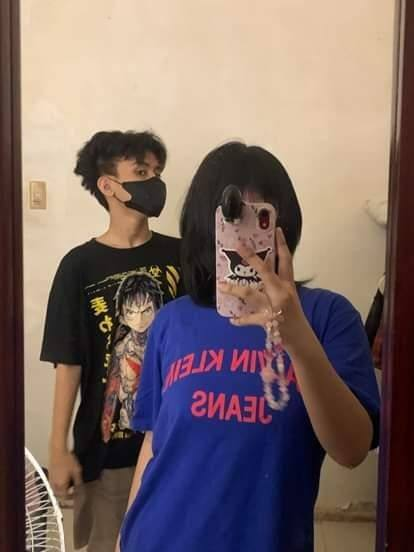
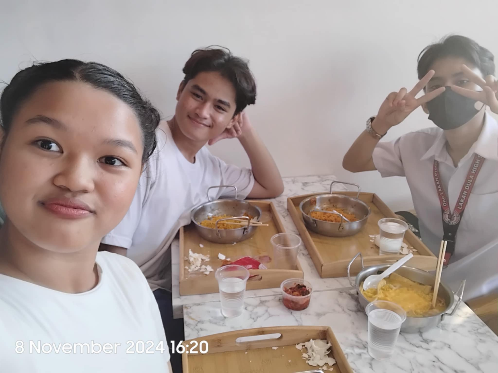
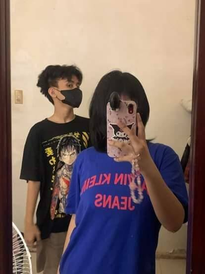
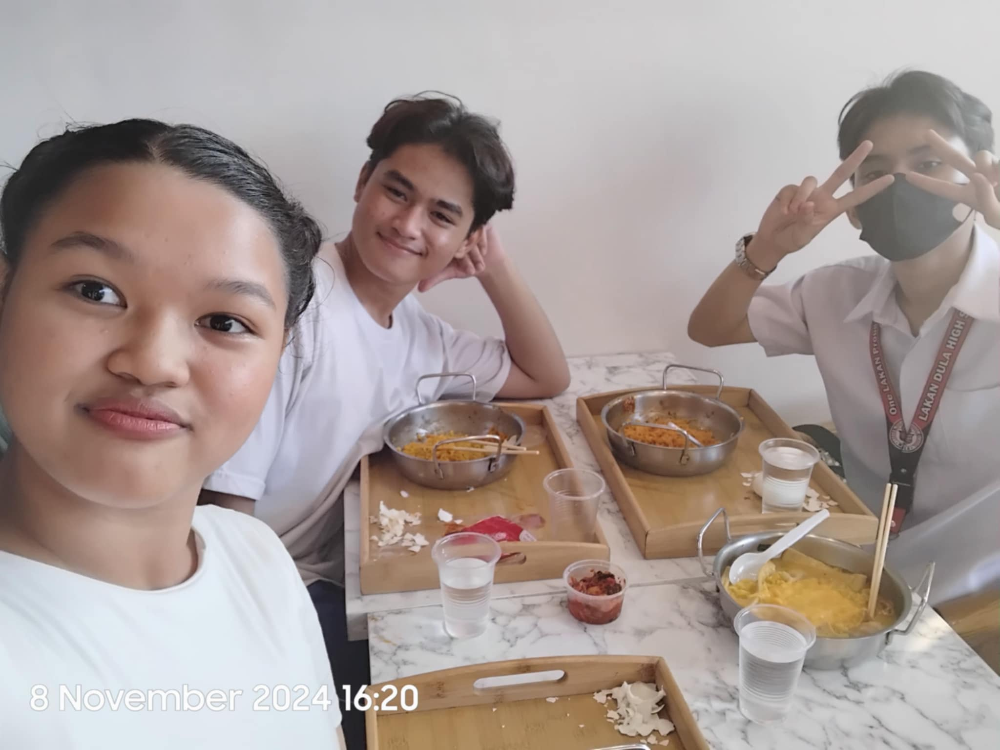

All About You Me
Hello, my name is Josh Aldwyn A. Duigan  , 14 years old from 9-GomBurZa, studying at Lakand Dula Highschool. What i do when I'm sad, bored or when i have extra time is drawing/playing with friends because it makes me happy. Other things that makes me happy are newly bought things, or expensive things that can be useful at times. My life motto is "Perception comes from forgiveness" that i rephrased from and originally known as
, 14 years old from 9-GomBurZa, studying at Lakand Dula Highschool. What i do when I'm sad, bored or when i have extra time is drawing/playing with friends because it makes me happy. Other things that makes me happy are newly bought things, or expensive things that can be useful at times. My life motto is "Perception comes from forgiveness" that i rephrased from and originally known as "To know one, Is to forgive one"
My family members are: Mark Selwyn A. Duigan, being my sibling or older brother, Maria Cecilia A. Duigan and Jose Niño A. Duigan, being my parents.
The utmost experiences i would like to tell as part of my introduction, is when i was in a near death situation but i was saved. I don't remember the details clearly but i was in a place that day, i was doing some random stuff at streets, playing, running and doing all that, i was wandering through the crowd with my friends and i was totally full of joy. My mind was not paying attention about the place, it was paying attention to the joy that i was having, full of excitement, energy and very hyper. To the point that, i would not notice a motor that has no brake, and in simple terms, uncontrollable. It did not have the best steering either, so the motorist cannot really do anything about it, because if he jumps off he will still hold the accountability of the destructions that were done. (112) But that is not the most shocking thing, yet. As you have guessed, the motor was headed right literally where i was running and frolicking around, as it gets closer, i start to notice it, and i was scared as hell. But luckily, someone had the ability to think fastquickly in that very particular situation and pulled me, opposing the direction of his motorbike, with no wounds, no scratches, or anything.
For me, the most challenging experience that I have had so far are the experiences throughout this high school journey. I have always had problems with my social life, to the point that it affects my academics in any sort of way, either positive, or negative. I am very sensitive when it comes to words, actions and things that make me question my own worth, especially offensive words that i have received from my so called "friends". Friendships and other kinds of relationships hardly affected my mental state and how my brain processes things. I always felt like i was misunderstood and not even 10 self explanatory words will make them understand my situation. But what i did is that i didn't give up, i kept fighting and fighting until I've finally done good. I let go of the people who were not being so sensitive, and then kept those people who supported me at my lowest.
I'd like to tell you about how my values changed over the years.I slowly adapt to my surroundings and focused on what needed change, because i want to be the person I've been dreaming of, manners filling my personality, discipline, patience and simplicity. I've learnt to settle and adapt to the things that makes me uncomfortable, or practicing voluntary discomfort, based in stoic practices. The introduction wouldn't be complete without me saying my favourite things. My favourite things are things that are color black, like accessories, clothes and etc. I like spicy foods such as ramens, chickens
chickens  and specific sweet foods and drinks such as puto bumbong
and specific sweet foods and drinks such as puto bumbong
 , and softdrinks
, and softdrinks I also love spending time with my friends and family, it calms me and ease my heavy feelings when they are around, there's nothing as enjoyable as spending time with them, for all we have is laughter, understanding and mostly quality time.
I also love spending time with my friends and family, it calms me and ease my heavy feelings when they are around, there's nothing as enjoyable as spending time with them, for all we have is laughter, understanding and mostly quality time.
 





And finally, my plans for the future are: manage a business, start a family, and travel around the world, but first i want to study really hard, because if i don't, i wouldn't get a good future and would not be able to do things i want to do